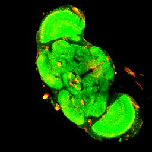
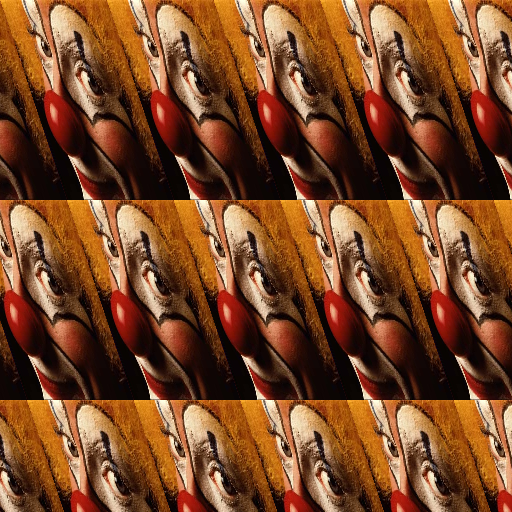

In this notebook, we will explore how to store, process and visualize data with ImgLib2 in a notebook.
First let’s add the necessary dependencies. We will use ImageJ to load example images and to generate RenderedImage outputs that we can use to render in the notebook. Then, we will import ImgLib2 and the modules to share data between ImgLib2 and ImageJ and the imglib2-realtransform module that includes various transformations.
If we want to work with this image in ImgLib2, we need to provide it as an ImgLib2 interface:
Code
importnet.imglib2.*;importnet.imglib2.img.imageplus.*;var imp = IJ.openImage("https://mirror.imagej.net/ij/images/clown.jpg");// for later use without the compiler losing its mind, we must provide type information// for the ImagePlus wrapper, so let's not use var hereRandomAccessibleInterval<?> rai = ImagePlusImgs.from(imp);rai;
IntImagePlus [320x200]
There is no default renderer for ImgLib2 interfaces available to the notebook kernel, so we see a default String representation of the result (when rendering this cell the first time). So let’s register some simple renderers that use ImgLib2’s ImageJ bridge and Spencer Park’s image renderer to render ImgLib2 data into the notebook. We add a version that renders the first 2D slice of a RandomAccessibleInterval and a second version that renders a default interval 512x512+0+0 of the 2D slice at position 0 in all other dimensions of an infinite RandomAccessible.
var imp = IJ.openImage("https://mirror.imagej.net/ij/images/clown.jpg");// for later use without the compiler losing its mind, we must provide type information// for the ImagePlus wrapper, so let's not use var hereRandomAccessibleInterval<?> rai = ImagePlusImgs.from(imp);display(rai,"image/gif");display(rai,"image/jpeg");display(rai,"image/png");
You may have noticed that the output of this cell ends with an obscure identifier. We see this, because we did not catch the output of the display method which provides an identifier for the output object that it generates. This identifier can be used to update the contents of this object. We can use this to render simple animations, e.g. to slice through a 3D volume. Let’s try this with a 3D volume from the ImageJ example images:
Code
var imp = IJ.openImage("https://mirror.imagej.net/ij/images/flybrain.zip");RandomAccessibleInterval<?> rai = ImagePlusImgs.from(imp);var refSlice =display(Views.hyperSlice(rai,2, rai.dimension(2)/2),"image/jpeg");var refLabel =display("slice "+ rai.dimension(2)/2);for(int z =0; z < rai.dimension(2);++z){var slice = Views.hyperSlice(rai,2, z);updateDisplay(refSlice, slice,"image/jpeg");updateDisplay(refLabel,"slice "+ z);Thread.sleep(100);}// for static notebook exportupdateDisplay(refSlice, Views.hyperSlice(rai,2, rai.dimension(2)/2),"image/jpeg");

slice 56
Of course, you can only see the animation if you actually run the notebook cell. In a future iteration, we are planning to implement an animated GIF generator for offline animations, but not this time. Let’s see what else we can do with these renderers.
First, let’s apply some transformations to images. Already in the above border extension example as well as in the slicing animation, we have used ImgLib2’s default behavior to apply transformations lazily, i.e. only when a ‘pixel’ is actually queried (e.g. to render it into a RenderedImage raster), the transformations are applied. Transformations can be applied to both coordinates and values. Lets apply some transformations to values:
display(Views.invertAxis(rai,0));display("flip axis 0");display(Views.permute(rai,0,1));display("permute axes");display(Views.extendMirrorSingle(rai));display("mirror extension without repeated border pixels");display(Views.subsample(Views.shear(Views.extendPeriodic(rai),0,1),3,1));display("extend periodically, shear axis 1 into axis 0, subsample by (3, 1)");
flip axis 0
permute axes
mirror extension without repeated border pixels

extend periodically, shear axis 1 into axis 0, subsample by (3, 1)
aaa10b76-8e83-4b78-9239-fa15d4c143eb
While most trivial integer transformations such as flipping axes work on intervals, you probably noticed that we had to extend the image to infinity in order to shear it, so ImgLib2 can provide values for coordinates outside of the source interval. For real coordinate transformations we will also need to interpolate values at non-integer coordinates. Finally, in order to render the result, we have to read it from a raster. Let’s do this:
Code
importnet.imglib2.interpolation.randomaccess.*;importnet.imglib2.realtransform.*;var imp = IJ.openImage("https://mirror.imagej.net/ij/images/clown.jpg");RandomAccessibleInterval<ARGBType> rai = ImagePlusImgs.from(imp);var ra = Views.extendValue(rai,newARGBType(0xff00ff00));// < green backgroundvar interpolated = Views.interpolate(ra,new ClampingNLinearInterpolatorFactory<>());// n-linear interpolation/*** This would be* var interpolated = Views.interpolate(ra, new NLinearInterpolatorFactory<>());* if you have no concern about value overflows*/var affine =newAffineTransform2D();var transformed = Views.interval(RealViews.affine(interpolated, affine), rai);// shortcut for affinesvar refImage =display(transformed,"image/jpeg");var refLabel =display("","text/html");finalint steps =20;for(int i =0; i < steps;++i){ affine.translate(-rai.dimension(0)/2,-rai.dimension(1)/2); affine.rotate(Math.PI/6.0/ steps); affine.scale(1.0+0.7/ steps); affine.translate(rai.dimension(0)/2, rai.dimension(1)/2);updateDisplay(refImage, Views.interval(transformed, rai),"image/jpeg");updateDisplay( refLabel,String.format("""<p>affine transformation matrix:</p><table><tr><td>%.2f</td><td>%.2f</td><td>%.2f</td></tr><tr><td>%.2f</td><td>%.2f</td><td>%.2f</td></tr></table>""", affine.get(0,0), affine.get(0,1), affine.get(0,2), affine.get(1,0), affine.get(1,1), affine.get(1,2)),"text/html");Thread.sleep(100);}
affine transformation matrix:
1.72
-0.99
-16.22
0.99
1.72
-231.50
Affine transformation are probably the most well known and simple real coordinate transformations, but there are many more. Let’s try a ThinplateSplineTransform and format text output with markdown: